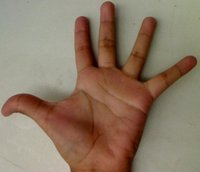

Histogram Comparison¶
Goal¶
In this tutorial you will learn how to:
- Use the function compareHist to get a numerical parameter that express how well two histograms match with each other.
- Use different metrics to compare histograms
Theory¶
To compare two histograms ( and ), first we have to choose a metric () to express how well both histograms match.
OpenCV implements the function compareHist to perform a comparison. It also offers 4 different metrics to compute the matching:
Correlation ( CV_COMP_CORREL )
where
and
 is the total number of histogram bins.
is the total number of histogram bins.Chi-Square ( CV_COMP_CHISQR )
Intersection ( method=CV_COMP_INTERSECT )

Bhattacharyya distance ( CV_COMP_BHATTACHARYYA )
Code¶
What does this program do?
- Loads a base image and 2 test images to be compared with it.
- Generate 1 image that is the lower half of the base image
- Convert the images to HSV format
- Calculate the H-S histogram for all the images and normalize them in order to compare them.
- Compare the histogram of the base image with respect to the 2 test histograms, the histogram of the lower half base image and with the same base image histogram.
- Display the numerical matching parameters obtained.
Downloadable code: Click here
Code at glance:
/**
* @file compareHist_Demo.cpp
* @brief Sample code to use the function compareHist
* @author OpenCV team
*/
#include "opencv2/highgui/highgui.hpp"
#include "opencv2/imgproc/imgproc.hpp"
#include <iostream>
#include <stdio.h>
using namespace std;
using namespace cv;
/**
* @function main
*/
int main( int argc, char** argv )
{
Mat src_base, hsv_base;
Mat src_test1, hsv_test1;
Mat src_test2, hsv_test2;
Mat hsv_half_down;
/// Load three images with different environment settings
if( argc < 4 )
{
printf("** Error. Usage: ./compareHist_Demo <image_settings0> <image_setting1> <image_settings2>\n");
return -1;
}
src_base = imread( argv[1], 1 );
src_test1 = imread( argv[2], 1 );
src_test2 = imread( argv[3], 1 );
/// Convert to HSV
cvtColor( src_base, hsv_base, COLOR_BGR2HSV );
cvtColor( src_test1, hsv_test1, COLOR_BGR2HSV );
cvtColor( src_test2, hsv_test2, COLOR_BGR2HSV );
hsv_half_down = hsv_base( Range( hsv_base.rows/2, hsv_base.rows - 1 ), Range( 0, hsv_base.cols - 1 ) );
/// Using 50 bins for hue and 60 for saturation
int h_bins = 50; int s_bins = 60;
int histSize[] = { h_bins, s_bins };
// hue varies from 0 to 179, saturation from 0 to 255
float h_ranges[] = { 0, 180 };
float s_ranges[] = { 0, 256 };
const float* ranges[] = { h_ranges, s_ranges };
// Use the o-th and 1-st channels
int channels[] = { 0, 1 };
/// Histograms
MatND hist_base;
MatND hist_half_down;
MatND hist_test1;
MatND hist_test2;
/// Calculate the histograms for the HSV images
calcHist( &hsv_base, 1, channels, Mat(), hist_base, 2, histSize, ranges, true, false );
normalize( hist_base, hist_base, 0, 1, NORM_MINMAX, -1, Mat() );
calcHist( &hsv_half_down, 1, channels, Mat(), hist_half_down, 2, histSize, ranges, true, false );
normalize( hist_half_down, hist_half_down, 0, 1, NORM_MINMAX, -1, Mat() );
calcHist( &hsv_test1, 1, channels, Mat(), hist_test1, 2, histSize, ranges, true, false );
normalize( hist_test1, hist_test1, 0, 1, NORM_MINMAX, -1, Mat() );
calcHist( &hsv_test2, 1, channels, Mat(), hist_test2, 2, histSize, ranges, true, false );
normalize( hist_test2, hist_test2, 0, 1, NORM_MINMAX, -1, Mat() );
/// Apply the histogram comparison methods
for( int i = 0; i < 4; i++ )
{
int compare_method = i;
double base_base = compareHist( hist_base, hist_base, compare_method );
double base_half = compareHist( hist_base, hist_half_down, compare_method );
double base_test1 = compareHist( hist_base, hist_test1, compare_method );
double base_test2 = compareHist( hist_base, hist_test2, compare_method );
printf( " Method [%d] Perfect, Base-Half, Base-Test(1), Base-Test(2) : %f, %f, %f, %f \n", i, base_base, base_half , base_test1, base_test2 );
}
printf( "Done \n" );
return 0;
}
Explanation¶
Declare variables such as the matrices to store the base image and the two other images to compare ( BGR and HSV )
Mat src_base, hsv_base; Mat src_test1, hsv_test1; Mat src_test2, hsv_test2; Mat hsv_half_down;
Load the base image (src_base) and the other two test images:
if( argc < 4 ) { printf("** Error. Usage: ./compareHist_Demo <image_settings0> <image_setting1> <image_settings2>\n"); return -1; } src_base = imread( argv[1], 1 ); src_test1 = imread( argv[2], 1 ); src_test2 = imread( argv[3], 1 );
Convert them to HSV format:
cvtColor( src_base, hsv_base, CV_BGR2HSV ); cvtColor( src_test1, hsv_test1, CV_BGR2HSV ); cvtColor( src_test2, hsv_test2, CV_BGR2HSV );
Also, create an image of half the base image (in HSV format):
hsv_half_down = hsv_base( Range( hsv_base.rows/2, hsv_base.rows - 1 ), Range( 0, hsv_base.cols - 1 ) );
Initialize the arguments to calculate the histograms (bins, ranges and channels H and S ).
int h_bins = 50; int s_bins = 60; int histSize[] = { h_bins, s_bins }; float h_ranges[] = { 0, 180 }; float s_ranges[] = { 0, 256 }; const float* ranges[] = { h_ranges, s_ranges }; int channels[] = { 0, 1 };
Create the MatND objects to store the histograms:
MatND hist_base; MatND hist_half_down; MatND hist_test1; MatND hist_test2;
Calculate the Histograms for the base image, the 2 test images and the half-down base image:
calcHist( &hsv_base, 1, channels, Mat(), hist_base, 2, histSize, ranges, true, false ); normalize( hist_base, hist_base, 0, 1, NORM_MINMAX, -1, Mat() ); calcHist( &hsv_half_down, 1, channels, Mat(), hist_half_down, 2, histSize, ranges, true, false ); normalize( hist_half_down, hist_half_down, 0, 1, NORM_MINMAX, -1, Mat() ); calcHist( &hsv_test1, 1, channels, Mat(), hist_test1, 2, histSize, ranges, true, false ); normalize( hist_test1, hist_test1, 0, 1, NORM_MINMAX, -1, Mat() ); calcHist( &hsv_test2, 1, channels, Mat(), hist_test2, 2, histSize, ranges, true, false ); normalize( hist_test2, hist_test2, 0, 1, NORM_MINMAX, -1, Mat() );
Apply sequentially the 4 comparison methods between the histogram of the base image (hist_base) and the other histograms:
for( int i = 0; i < 4; i++ ) { int compare_method = i; double base_base = compareHist( hist_base, hist_base, compare_method ); double base_half = compareHist( hist_base, hist_half_down, compare_method ); double base_test1 = compareHist( hist_base, hist_test1, compare_method ); double base_test2 = compareHist( hist_base, hist_test2, compare_method ); printf( " Method [%d] Perfect, Base-Half, Base-Test(1), Base-Test(2) : %f, %f, %f, %f \n", i, base_base, base_half , base_test1, base_test2 ); }
Results¶
We use as input the following images:

 
where the first one is the base (to be compared to the others), the other 2 are the test images. We will also compare the first image with respect to itself and with respect of half the base image.
We should expect a perfect match when we compare the base image histogram with itself. Also, compared with the histogram of half the base image, it should present a high match since both are from the same source. For the other two test images, we can observe that they have very different lighting conditions, so the matching should not be very good:
Here the numeric results:
Method Base - Base Base - Half Base - Test 1 Base - Test 2 Correlation 1.000000 0.930766 0.182073 0.120447 Chi-square 0.000000 4.940466 21.184536 49.273437 Intersection 24.391548 14.959809 3.889029 5.775088 Bhattacharyya 0.000000 0.222609 0.646576 0.801869 For the Correlation and Intersection methods, the higher the metric, the more accurate the match. As we can see, the match base-base is the highest of all as expected. Also we can observe that the match base-half is the second best match (as we predicted). For the other two metrics, the less the result, the better the match. We can observe that the matches between the test 1 and test 2 with respect to the base are worse, which again, was expected.
Help and Feedback
You did not find what you were looking for?- Ask a question on the Q&A forum.
- If you think something is missing or wrong in the documentation, please file a bug report.